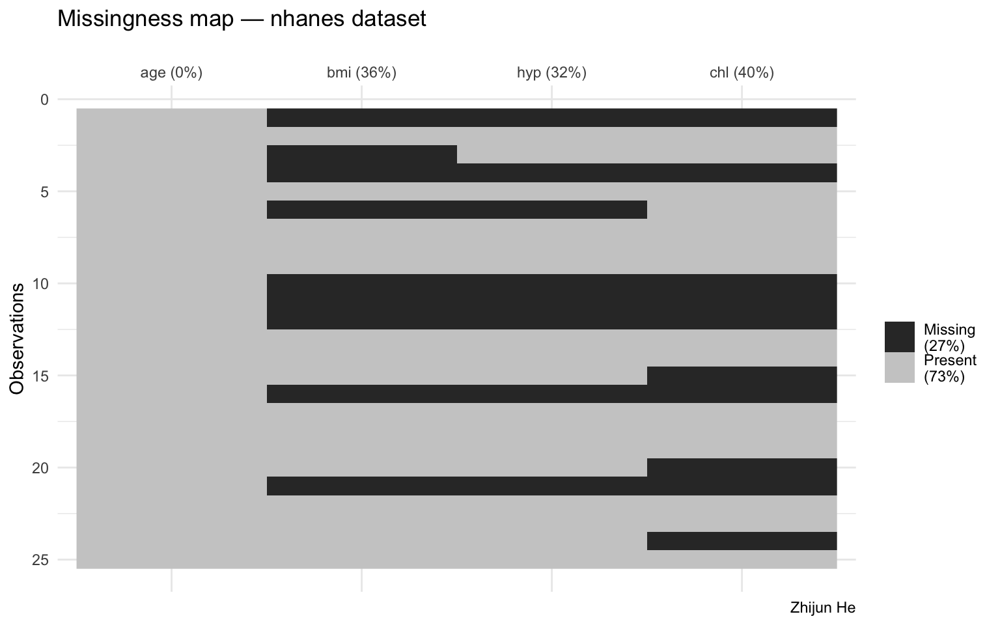
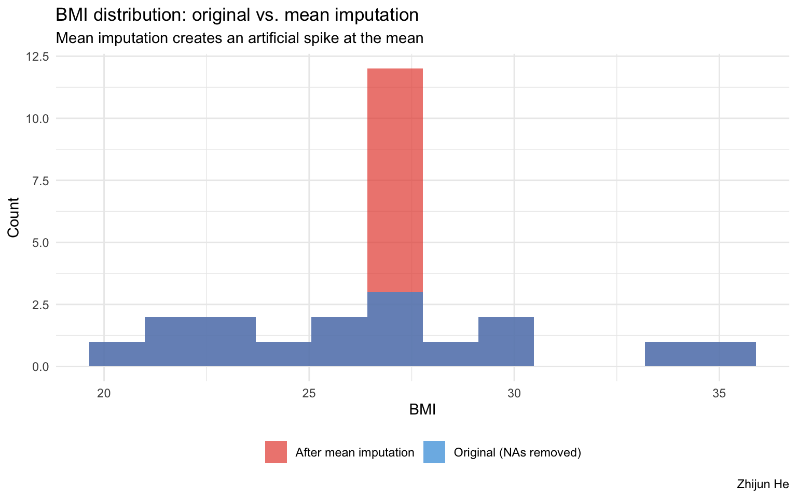
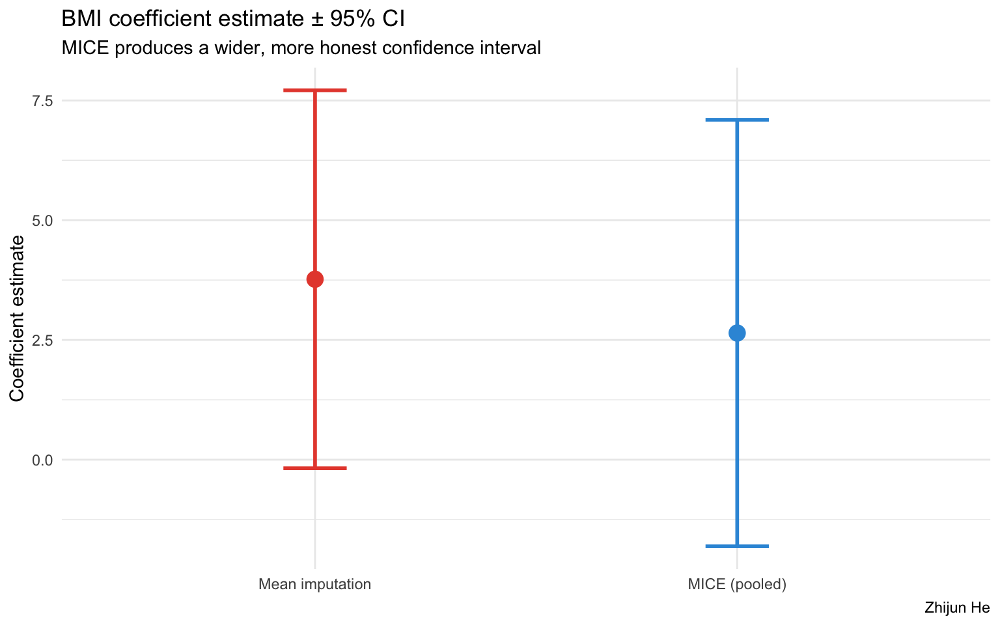

Why replace_na(mean(…)) Lies, and MICE Fixes It
The Dataset
We use the nhanes dataset that ships with the mice package — a 25-row subset of the US National Health and Nutrition Examination Survey containing age, BMI, hypertension status, and cholesterol. It already has real missing values, which makes it a perfect teaching case.
Rows: 25
Columns: 4
$ age <dbl> 1, 2, 1, 3, 1, 3, 1, 1, 2, 2, 1, 2, 3, 2, 1, 1, 3, 2, 1, 3, 1, 1, …
$ bmi <dbl> NA, 22.7, NA, NA, 20.4, NA, 22.5, 30.1, 22.0, NA, NA, NA, 21.7, 28…
$ hyp <dbl> NA, 1, 1, NA, 1, NA, 1, 1, 1, NA, NA, NA, 1, 2, 1, NA, 2, 2, 1, 2,…
$ chl <dbl> NA, 187, 187, NA, 113, 184, 118, 187, 238, NA, NA, NA, 206, 204, N…How much is missing, and where?
# A tibble: 4 × 3
variable n_miss pct_miss
<chr> <int> <num>
1 chl 10 40
2 bmi 9 36
3 hyp 8 32
4 age 0 0Code

Strategy 1: Mean Imputation (the wrong way)
The most common default: replace every NA with the column mean.
Code
age bmi hyp chl
0 0 0 0 Now fit a simple regression (cholesterol ~ BMI) on the mean-imputed data:
Call:
lm(formula = chl ~ bmi, data = nhanes_mean)
Residuals:
Min 1Q Median 3Q Max
-63.932 -7.400 0.000 6.263 90.199
Coefficients:
Estimate Std. Error t value Pr(>|t|)
(Intercept) 91.340 53.873 1.695 0.1035
bmi 3.767 2.013 1.871 0.0741 .
---
Signif. codes: 0 '***' 0.001 '**' 0.01 '*' 0.05 '.' 0.1 ' ' 1
Residual standard error: 32.86 on 23 degrees of freedom
Multiple R-squared: 0.1321, Adjusted R-squared: 0.0944
F-statistic: 3.502 on 1 and 23 DF, p-value: 0.07408What does the distribution of bmi look like after mean imputation?
Code
bind_rows(
nhanes |> mutate(source = "Original (NAs removed)") |> drop_na(bmi),
nhanes_mean |> mutate(source = "After mean imputation")
) |>
ggplot(aes(x = bmi, fill = source)) +
geom_histogram(bins = 12, alpha = 0.7, position = "identity") +
scale_fill_manual(values = c("#E74C3C", "#3498DB")) +
labs(
title = "BMI distribution: original vs. mean imputation",
subtitle = "Mean imputation creates an artificial spike at the mean",
fill = NULL, x = "BMI", y = "Count",
caption = "Zhijun He"
) +
theme_minimal() +
theme(legend.position = "bottom")
Problem: every missing BMI becomes 26.6. The distribution is distorted, variance is deflated, and downstream standard errors will be too small.
Strategy 2: MICE (the right way)
MICE (Multivariate Imputation by Chained Equations) creates m = 5 complete datasets, each with different plausible imputed values drawn from the conditional distribution of each variable given all others.
Class: mids
Number of multiple imputations: 5
Imputation methods:
age bmi hyp chl
"" "pmm" "pmm" "pmm"
PredictorMatrix:
age bmi hyp chl
age 0 1 1 1
bmi 1 0 1 1
hyp 1 1 0 1
chl 1 1 1 0What did MICE actually impute?
stripplot shows the 5 imputed values (red) overlaid on the observed data (blue) for each variable. Good imputation should look like it came from the same distribution.
Fit the model across all 5 imputed datasets and pool
term estimate std.error statistic df p.value
1 (Intercept) 123.39189 61.258722 2.014275 16.69685 0.06038126
2 bmi 2.64382 2.271805 1.163753 17.18086 0.26043170Side-by-Side Comparison
Code
# Extract coefficients from both approaches
results <- bind_rows(
broom::tidy(fit_mean) |>
filter(term == "bmi") |>
mutate(method = "Mean imputation"),
summary(pooled) |>
as_tibble() |>
filter(term == "bmi") |>
rename(estimate = estimate, std.error = std.error,
statistic = statistic, p.value = p.value) |>
mutate(method = "MICE (pooled)")
)
results |>
select(method, estimate, std.error, statistic, p.value) |>
knitr::kable(digits = 3, caption = "BMI coefficient: mean imputation vs. MICE")| method | estimate | std.error | statistic | p.value |
|---|---|---|---|---|
| Mean imputation | 3.767 | 2.013 | 1.871 | 0.074 |
| MICE (pooled) | 2.644 | 2.272 | 1.164 | 0.260 |
Code
results |>
mutate(
lo = estimate - 1.96 * std.error,
hi = estimate + 1.96 * std.error
) |>
ggplot(aes(x = method, y = estimate, color = method)) +
geom_point(size = 4) +
geom_errorbar(aes(ymin = lo, ymax = hi), width = 0.15, linewidth = 1) +
scale_color_manual(values = c("#E74C3C", "#3498DB")) +
labs(
title = "BMI coefficient estimate ± 95% CI",
subtitle = "MICE produces a wider, more honest confidence interval",
y = "Coefficient estimate", x = NULL, color = NULL,
caption = "Zhijun He"
) +
theme_minimal() +
theme(legend.position = "none")
Why the Intervals Differ: Rubin’s Rules
When we call pool(), MICE combines estimates across \(m = 5\) datasets using Rubin’s Rules (1987):
\[\bar{Q} = \frac{1}{m}\sum_{i=1}^{m}\hat{Q}_i\]
\[T = \bar{U} + \left(1 + \frac{1}{m}\right) B\]
where \(\bar{U}\) is the within-imputation variance (model uncertainty) and \(B\) is the between-imputation variance (imputation uncertainty). Mean imputation sets \(B = 0\) by construction — it pretends there is no uncertainty about the imputed values. MICE does not.
Code
| term | estimate | ubar | b | t | riv |
|---|---|---|---|---|---|
| (Intercept) | 123.3919 | 3221.0444 | 442.9889 | 3752.6310 | 0.1650 |
| bmi | 2.6438 | 4.4967 | 0.5537 | 5.1611 | 0.1478 |
riv (relative increase in variance due to missingness) quantifies exactly how much wider MICE makes the confidence interval compared to a complete-data analysis. Mean imputation would report riv = 0 — which is simply a lie.
Key Takeaway
| Mean imputation | MICE | |
|---|---|---|
| Variance of imputed variable | Deflated (spike at mean) | Preserved |
| Correlation structure | Weakened | Preserved |
| Standard errors | Too small | Correct via Rubin’s Rules |
| Between-imputation uncertainty | Ignored (\(B = 0\)) | Accounted for |
| Lines of code | 1 | ~4 |
replace_na(mean(...)) is not “safe” — it is a modeling assumption disguised as data cleaning. It treats imputed values as if they were observed facts. Use it for quick EDA. For any inferential analysis, use MICE.